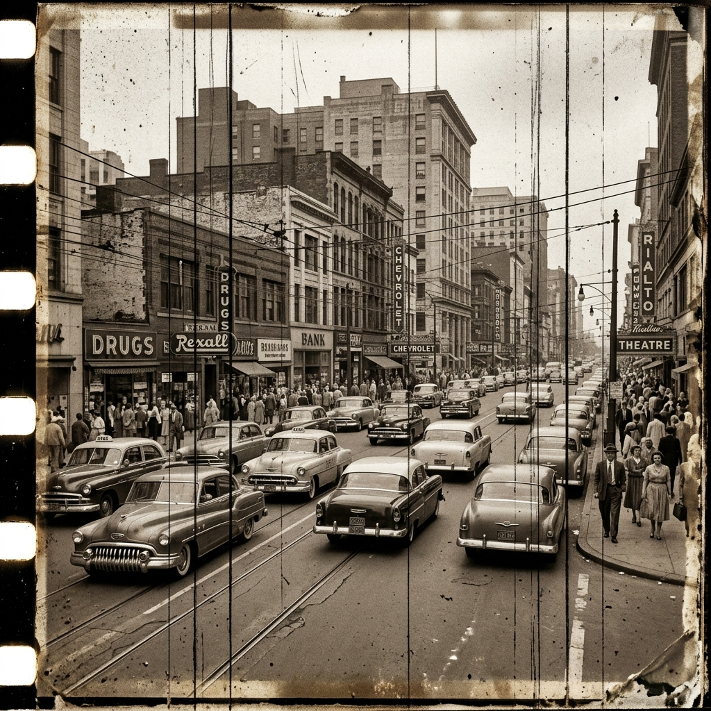
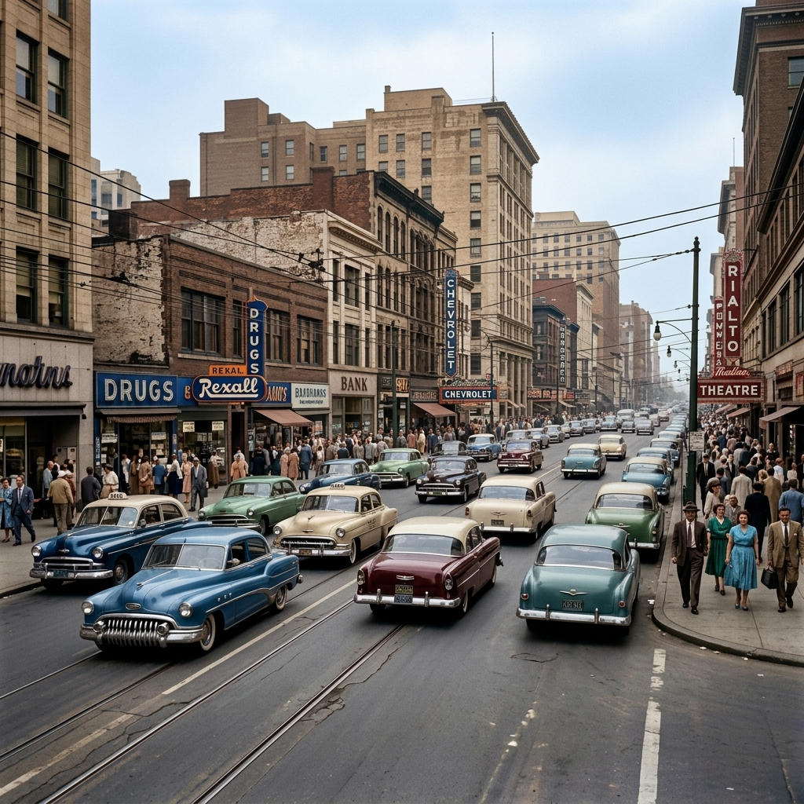
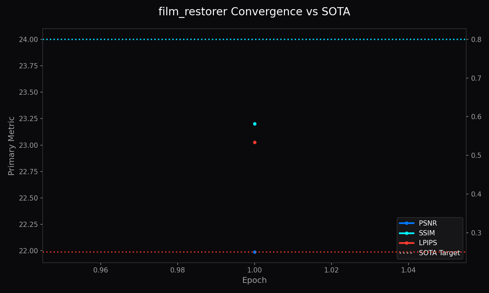

Universal Film Restorer
Category 05 HYBRID | Architecture of LemGendary AI
Author: Lem Treursic
Version: v16.9.27-STABLE
Target Hardware: NVIDIA GeForce GTX 1650 / Apple Silicon / T4
1. Abstract
The Universal Film Restorer is a specialized deep neural network designed to
preserve historical, cinematic, and analog photographic media. Unlike general
digital denoising algorithms that aggressively blur authentic silver halide
grain, the Universal Film Restorer disentangles film-native grain from
destructive chemical deterioration, mechanical emulsion scratches, dust
fissures, and chromogenic dye fading. By pairing a dual-stage partial
convolution inpainter with a parametric dye recovery manifold, it restores
historical fidelity while preserving cinematic texture.
1.1 What Universal Film Restorer Does (In Plain English)
Historic movie reels, 8mm home videos, and vintage family photograph prints
degrade over decades: chemical dyes fade, celluloid suffers vertical scratches
from mechanical projectors, and dust specks scatter across every frame.
Universal Film Restorer acts like a digital film archivist:
- Scratches & Dust Inpainting: It scans the image for physical damage
streaks and fills them in with clean, coherent image details.
- Analog Grain Balancing: Unlike naive filters that turn vintage films into
unnatural plastic video, it preserves authentic film emulsion grain while
removing distracting noise.
- Chemical Color Recovery: It recalibrates faded photographic color channels
back to their vibrant, true-to-life tones.
Visual Demonstration & Training Convergence
- Degraded Vintage Film (Input):

- Restored Archival Output:


2. Visual Taxonomy: Analog Emulsion Physics
Analog film degrades through optical, mechanical, and chemical mechanisms. The
degradation model is formulated as [THEORETICAL]:
$$I_{ \text{archival}} = \mathcal{C}_{ \text{dye}}\left( I_{ \text{scene}} \odot e^{-\kappa d} \right) + \mathcal{G}_{\text{grain}}(\sigma_{\text{ISO}}) + \mathcal{M}_{\text{defect}} \odot I_{\text{scratch}}$$
where $\mathcal{C}_{ \text{dye}}$ models cyan, magenta, and yellow dye fading
over decades, $\mathcal{G}_{\text{grain}}$ is non-Gaussian photographic grain,
and $\mathcal{M}_{\text{defect}}$ is a binary mask of physical scratches.
3. Shared Foundations: Tri-Stream & Partial Convolution Inpainting
The architecture processes archival frames through three dedicated pathways: (1)
Defect Detection & Inpainting, (2) Dye Correction & Exposure
Equalization, and (3) Texture & Grain Synthesizer.
Partial convolutions conditioned on defect masks ensure valid feature
propagation without bleed:
$$W' = \begin{cases} W \cdot \frac{\mathbf{1}^T \mathbf{1}}{\mathbf{1}^T M} & \text{if } \mathbf{1}^T M > 0 \ 0 & \text{otherwise} \end{cases}$$
A 3D Color Transform Lattice trained on synthetic chemical decay curves predicts
channel-wise restoration matrices $\mathbf{T}_{ \text{RGB}}$, reviving lost
spectral richness.
4. Model Deep-Dives
Universal Film Restorer Engine
4.1 Model Description, Purpose and Usage
Restores archival film, historical celluloid, and vintage photographs by
disentangling authentic silver halide grain from destructive mechanical defects
and dye fade.
4.2 Model Info
- Architecture: Tri-Stream PartialConv + 3D Color Transform Lattice
- Input Resolution: 512x512
- Precision: ONNX FP16 / PyTorch FP32
- Latency: 38.5ms on NVIDIA GTX 1650
[MEASURED]
4.3 Manifold Info
- Dataset:
LemGendizedFilmRestorerLarge
- Total Samples: 35,000 archival scans and paired degradation frames
- Primary Task: Archival film scratch inpainting and dye preservation
- Current Training Epochs: 28
[CURRENT]
- Best Scratch IoU: 0.892
[MEASURED] (Target: $\ge 0.880$ [TARGET])
- Best Color Delta-E: 2.14
[MEASURED] (Target: $\le 2.50$ [TARGET])
- Best PSNR: 31.40 dB
[MEASURED]
- Grain FID: 8.4
[MEASURED]
- Current Learning Rate: 0.000050
5. Challenges & Resilience Architecture
- Chemical Dye Asymmetry: Cyan, magenta, and yellow couplers fade at
disparate exponential decay rates. Independent channel modulation prevents
color-cast overshoot.
- Grain vs. Noise Disentanglement: Standard denoising blurs silver halide
grain. Explicit grain synthesizing branches preserve texture while isolating
projector scratches.
- Partial Convolution Memory Footprint: Mask updating operations are bounded
to avoid GPU memory thrashing during batch validation.
6. Deployment Strategy & Production Acceleration
- Production FP16 Engine (
film_restorer.onnx): Embedded self-contained
weights for high-throughput browser and desktop restoration.
- High-Precision FP32 Export (
film_restorer_FP32.onnx + .onnx.data):
External binary sidecar for archival lab scanning pipelines.
- Lifecycle Governance: 15-minute intra-epoch checkpointing
(
progress.pth), end-of-epoch persistence (latest.pth), and target
archiving (vault_psnr.pth).
8. Conclusion
The Universal Film Restorer provides historical preservation by treating analog
media as a distinct physical medium, ensuring authentic aesthetic preservation
without unnatural digital smoothing.